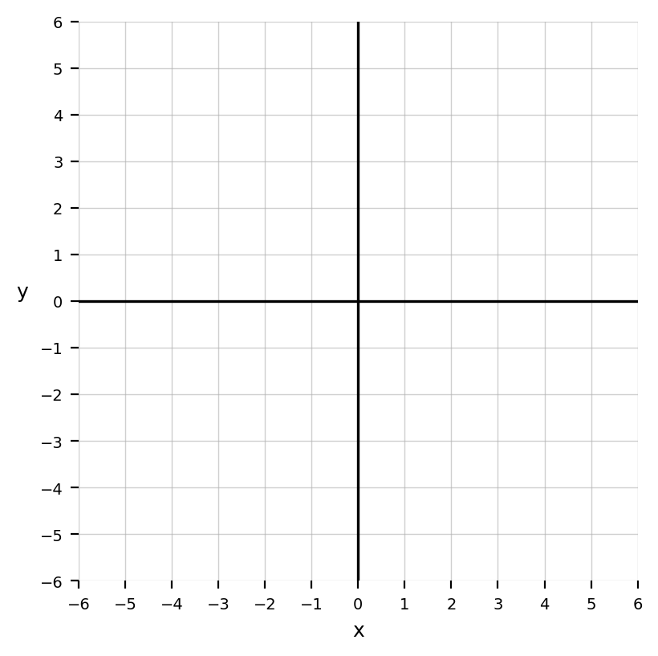
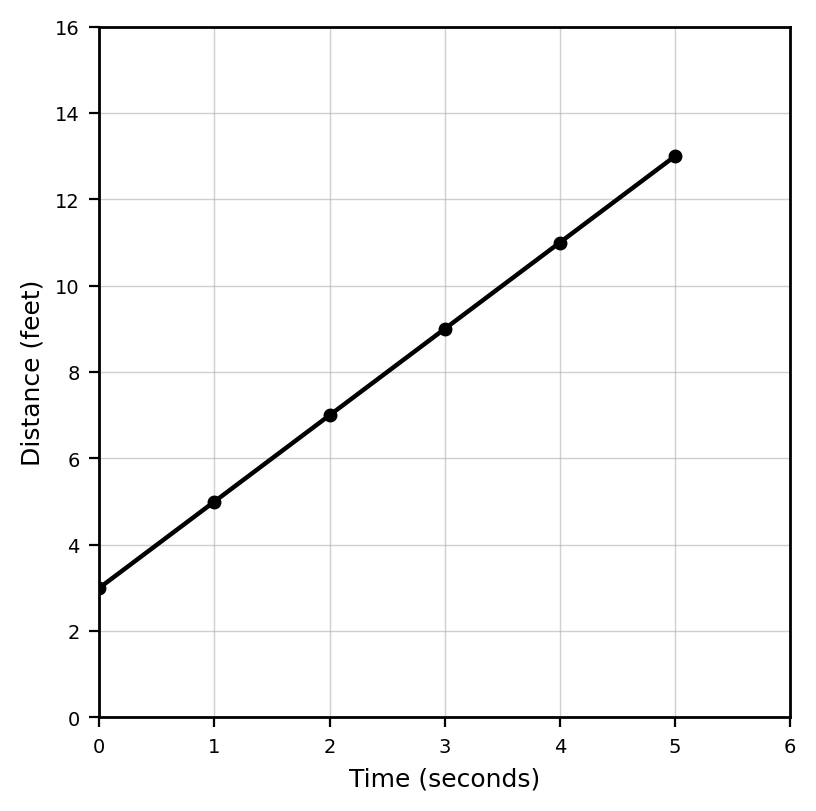

Students will analyze patterns, relationships, and linear representations in order to prepare for function analysis, modeling, and systems of equations.
| Rung | I Can Statement | DOK | Level |
|---|---|---|---|
| 8 | I can analyze and model real-world relationships using graphs, tables, equations, and contexts, justify the reasonableness of conclusions, and communicate my reasoning clearly. | DOK 4 | Above |
| 7 | I can create or revise representations of a relationship, compare multiple strategies, and critique whether different representations describe the same situation. | DOK 4 | Above |
| 6 | I can analyze linear relationships across graphs, tables, equations, visual patterns, and contexts to explain structure, rate of change, and starting value. | DOK 3 | Essential |
| 5 | I can justify whether a relationship is linear, explain how quantities change, and defend conclusions using evidence from more than one representation. | DOK 3 | Essential |
| 4 | I can write and use linear relationships from tables, graphs, visual patterns, and situations. | DOK 2 | Essential |
| 3 | I can identify and use input-output rules, patterns, constant change, and coordinate information to answer questions. | DOK 2 | Essential |
| 2 | I can identify coordinates, plot points, read tables, and recognize basic graph features such as axes and intercepts. | DOK 1 | Essential |
| 1 | I can use vocabulary and notation for coordinate planes, ordered pairs, inputs, outputs, patterns, and linear relationships correctly. | DOK 1 | Essential |
Format: 3–5 minute warm-up, quick check, vocabulary check, graph-reading check, or exit ticket
Purpose: Check whether students can recall vocabulary, identify coordinates, read basic tables and graphs, and recognize foundational features of patterns and relationships.
Identify the $x$-coordinate and $y$-coordinate of the point $$(4,-2)$$
Name the quadrant containing $$(-3,5)$$
Plot the point $$(2,3)$$ on the coordinate plane.

Complete the table for the rule $$y=x+2$$
| $x$ | 0 | 1 | 2 |
|---|---|---|---|
| $y$ |
A pattern starts at $4$ and increases by $3$ each step. State the next three values after $4$.
Determine the constant change in the sequence: $$5,\ 8,\ 11,\ 14$$
For the rule $$y=2x+5$$, identify the starting value and the constant change.
Do the rule $$y=x+3$$ and the table below match?
| $x$ | 1 | 2 | 3 |
|---|---|---|---|
| $y$ | 4 | 5 | 6 |
Format: Exit ticket, partner check, whiteboard response, short written task, mini-quiz, or graph-table task
Purpose: Check whether students can apply input-output rules, determine constant rates of change, write linear relationships, and connect graphs, tables, equations, and contexts.
Use the graph to make a table for $x=0,1,2,3$ and describe the pattern.

Complete the table for $$y=3x+2$$ and explain how each output is found.
| $x$ | 0 | 1 | 2 | 3 |
|---|---|---|---|---|
| $y$ |
A rule takes each input, doubles it, and subtracts $1$.
Write an equation and find the output when the input is $8$.
Find the constant rate of change from the table.
| $x$ | 0 | 1 | 2 | 3 |
|---|---|---|---|---|
| $y$ | 7 | 10 | 13 | 16 |
A tile pattern has $6$ tiles in Figure $1$ and $18$ tiles in Figure $4$. If the pattern is linear, determine the growth per figure.
Write an equation for a relationship with starting value $8$ and constant change $3$.
A phone company charges a $20 start fee and $15 per month. Write an equation for total cost $C$ after $m$ months.
Compare the starting values and rates of change.
| $x$ | 0 | 1 | 2 |
|---|---|---|---|
| A | 4 | 7 | 10 |
| B | 1 | 5 | 9 |
Format: Constructed response, representation analysis, strategy comparison, discourse prompt, or error analysis
Purpose: Check whether students can justify linearity, explain rate of change, analyze representation structure, and defend conclusions using mathematical evidence.
A student says:
The point $(3,8)$ means the graph goes right $8$ and up $3$.
Critique the statement and explain the correct interpretation.
A graph of a relationship passes through $$(0,4)$$ and $$(3,10)$$. Explain what these points reveal about the starting value and change.
A student claims that every input-output rule is linear. Use examples to critique the claim.
Compare the rules $$y=2x+3$$ and $$y=x^2+3$$. Explain how their tables would grow differently.
Determine whether the relationship is linear and justify your answer using differences.
| $x$ | 0 | 1 | 2 | 3 |
|---|---|---|---|---|
| $y$ | 2 | 6 | 12 | 20 |
A student writes $$y=3x+5$$ for a pattern with Figure $0$ equal to $3$ and growth of $5$. Identify the error and write the correct equation.
A table has starting value $4$ and rate $3$. A graph has $y$-intercept $3$ and rate $4$. Explain whether they represent the same relationship.
Explain why an equation is often more efficient than a drawing for predicting Figure $100$, but a drawing may be better for understanding the structure.
Format: Brief performance task, modeling task, design task, critique-and-revise task, or decision-making task
Purpose: Check whether students can transfer graph, table, pattern, rule, and linear relationship understanding to unfamiliar situations and justify decisions.
Create a coordinate-plane situation involving at least four points. Include a table, describe what the points represent, and explain one pattern in the graph.
Create one linear input-output rule and one non-linear input-output rule that begin with the same first two outputs. Explain how a student could eventually tell them apart.
Design a growing tile pattern with a constant rate of change. Provide a table, describe the growth, and write a rule.
Critique this claim:
The pattern with the larger starting value will always have more tiles.
Use a counterexample and explain the reasoning.
Create a real-world situation represented by $$y=4x+9$$. Define the variables, make a table, and interpret both numbers in the equation.
Create two equations with the same rate of change but different starting values. Describe a context where comparing them would matter.
Create a compare-two-plans problem involving a starting fee and a constant rate. Use equations or tables to recommend one plan and justify the recommendation.
Design a multi-representation challenge where students must decide whether a tile pattern, table, graph, and equation all match. Provide the evidence they should use.